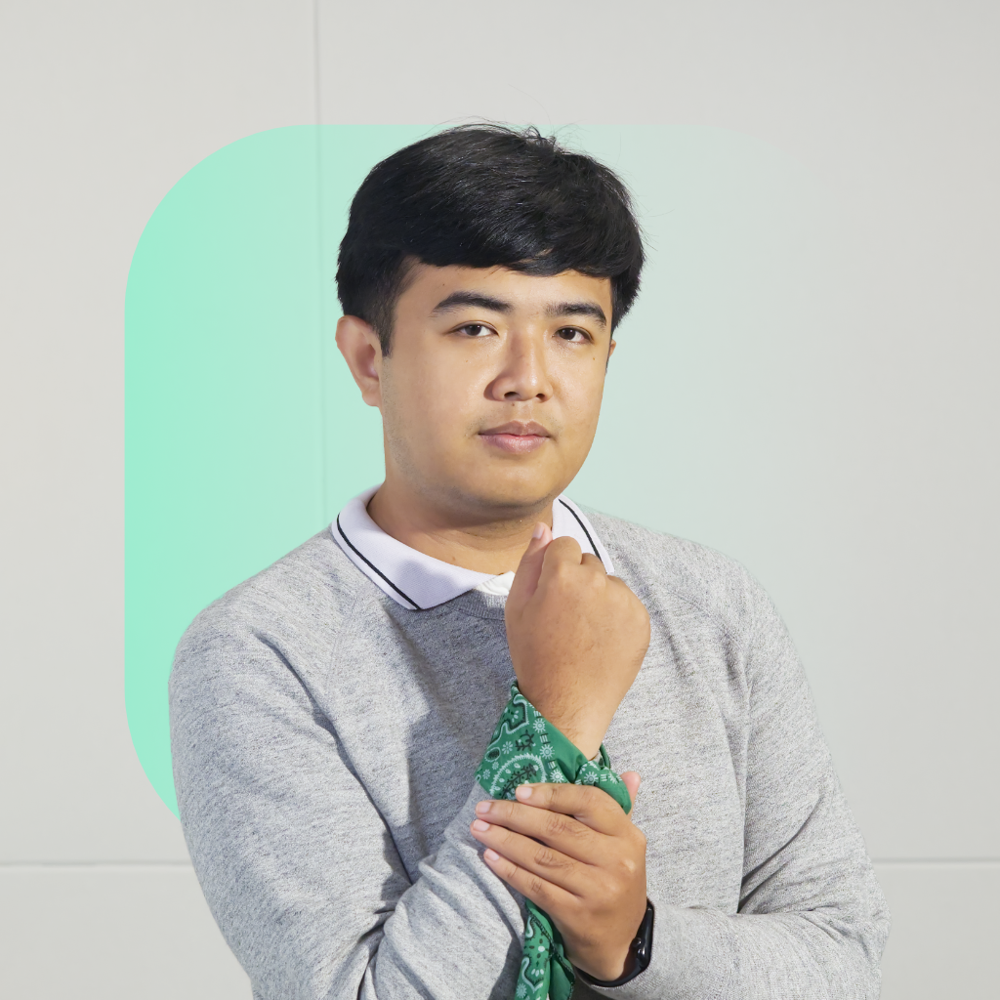

About Wira

Product Designer
Based in Bali
I studied International Relations because it is a field that combines many things I can learn:
politics,
economics, culture, history, and many more. It has given me a strong foundation in understanding how
people and societies interact, which I apply to my design work.
I regularly involve myself in community programs around education and international relations. I
believe
that giving back to society is important, and it also helps me gain insights from many people I met
that
I can apply to my design work.
I love observing how people interact with products and services, and I design to make those
interactions
better. My goal is to create experiences that are not only functional but also delightful and
meaningful
for every layer of society.
Currently learning to code, I believe the ability to understand how code works will help me design
better products. I also enjoy learning about new design tools and methodologies to keep my skills
sharp
and relevant.